Sig:
Construcción de las Tablas
Sup:
Construcción de las Tablas
Ant:
Construcción de las Tablas
Err:
Si hallas una errata ...
Los conjuntos de Primeros y Siguientes
Repasemos las nociones de conjuntos de
Primeros
y
siguientes
:
Definición 7.3.1
Dada una gramática 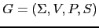 y un símbolo 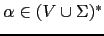 se define el conjunto 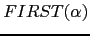 como:
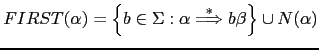
donde:
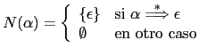
Definición 7.3.2
Dada una gramática y una variable 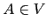 se define el conjunto como:
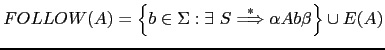
donde
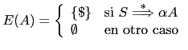
Algoritmo 7.3.1
Construcción de los conjuntos 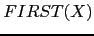
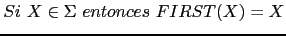
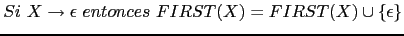
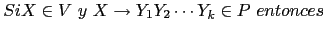
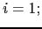
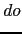
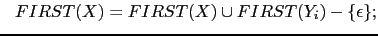
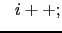
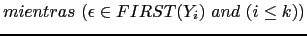
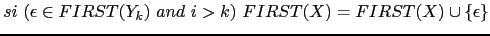
Este algoritmo puede ser extendido para calcular para 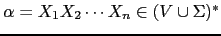 .
Algoritmo 7.3.2
Construcción del conjunto
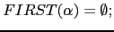
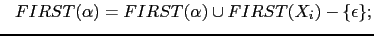
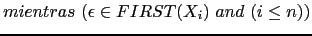
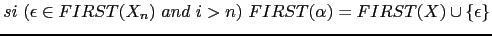
Algoritmo 7.3.3
Construcción de los conjuntos para las variables sintácticas :
Repetir los siguientes pasos hasta que ninguno de los conjuntos
cambie:
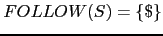 ( representa el final de la entrada)
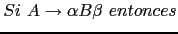
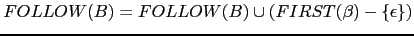
o bien 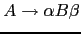 y 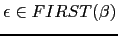 entonces
Sig:
Construcción de las Tablas
Sup:
Construcción de las Tablas
Ant:
Construcción de las Tablas
Err:
Si hallas una errata ...
Casiano Rodríguez León
2013-03-05